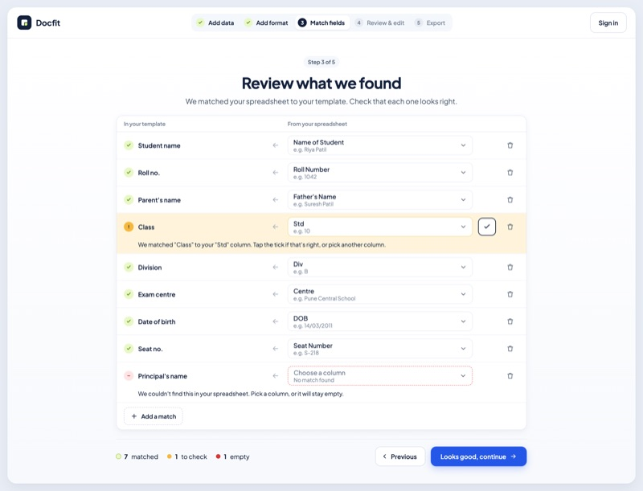
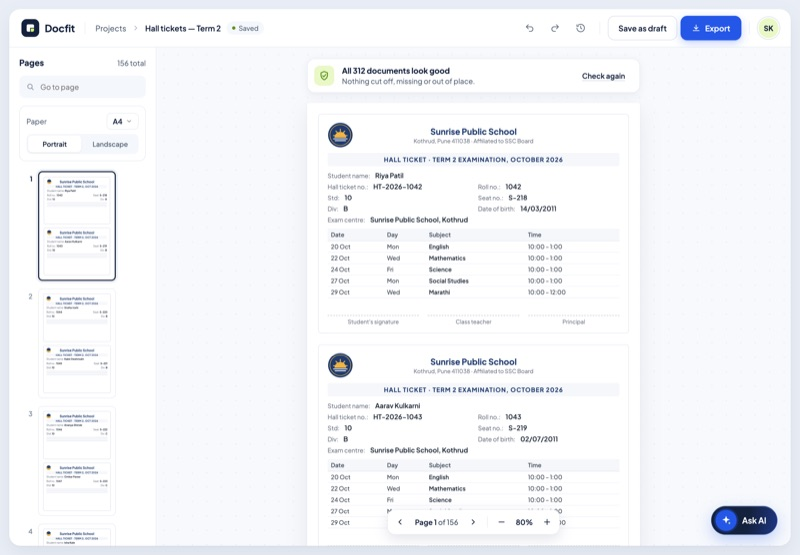

About 4 min read
DocFit
Spreadsheet data into a fixed document, without the layout breaking.
- Role
- Product Designer
- Timeline
- May 2024 – Jul 2026
- Industry
- AI document automation
- Scope
- Designed from zero to one
The short version
The problem
Schools, HR teams and finance teams all share one chore: taking data from a spreadsheet and placing it into a fixed document, like an exam hall ticket or an offer letter. The data exists and the format exists, yet people lose hours:
- Fixing spacing
- Checking every page
I spotted this, brought the idea to my agency, and designed DocFit from scratch.
What I did
I designed an AI product that fits the data into your own template without changing the layout. It:
- Asks only when it’s unsure
- Points you to the few documents that need attention
- Lets you fix a problem once and apply it everywhere
What happened
In prototype tests, a batch of more than 50 pages was ready in minutes, 30 at most, where existing methods take hours.
DocFit is now being built at the agency as a subscription product.
About product
First, a little background
I kept running into the same small problem in places that had nothing to do with each other. As an engineering student, I had information that needed to fit a strict assignment format. Later, I watched teachers at a school prepare hall tickets (the admit card a student needs to sit an exam).
The student data was already in a spreadsheet. The hall ticket design was already fixed. But putting the two together still meant nudging spacing, fixing alignment, and going through every page to see what had moved. I wanted to know if this was only a school problem, and if not, whether it was worth building a product for.
What research showed
I spoke to school heads and to HR people at a few companies, and I had seen the same thing at places I’d worked myself.
It wasn’t only schools. I found the same pattern in HR, finance, healthcare and education: people fitting spreadsheet data into a set document by hand.
The trouble starts after the data goes in:
The tools people already use, from mail merge to general AI assistants, each solve part of this. None of them keeps a layout reliable across a big batch.
So the real problem wasn’t creating documents. It was keeping a fixed layout intact when the data keeps changing, for people who aren’t technical.
Three decisions that shaped it
The layout is the product
The AI fits the data into your format. It never redesigns your format around the data. What you set up is what you get back.
The AI asks only when it’s unsure
It does the matching work for you and stops to ask only when something is truly unclear. Nothing technical is shown, and every screen says plainly what happened and what to do next.
Check what’s wrong, not every page
Nobody can reliably check hundreds of pages by eye. So DocFit points you to the few documents that need attention, and you can correct a repeated problem once instead of page by page.
A glimpse of the product
Matching the details, pointing to what needs attention, and the final check before export.


How I worked
I worked closely with a developer to understand what AI could reliably do here and what it couldn’t, and backed that up with my own reading. Those limits shaped the design. They are why DocFit asks when it’s unsure instead of guessing.
My tools were Paper, Figma and Claude. I used Claude, along with a few agentic skills, to define the problem, pull insights out of my research, think through edge cases, and build better prototypes faster.
What came of it
-
30 minutes at most
In prototype tests, a batch of more than 50 pages was ready in minutes, 30 at most. The same job takes hours with existing methods, along with the stress of checking every page by hand.
-
Growing
DocFit is now being built at the agency and is planned as a subscription product. It’s early, so there is no usage data yet.
What started as something I noticed in a school is becoming a real product.
What I took away
The first version of a problem is rarely the real one.
I started with “creating documents is slow.” The real problem was keeping a layout intact as the data changes.
Small annoyances can be worth serious attention.
People had simply learned to live with this one, in schools, HR, finance and healthcare alike.
Good AI products don’t try to do everything.
DocFit asks when it isn’t sure, shows you the result before anything is final, and makes checking easy. That is what makes people trust it.
DocFit is still being built, so I’ve kept the detailed flow and screens off this page. I’m happy to walk through them in a conversation.